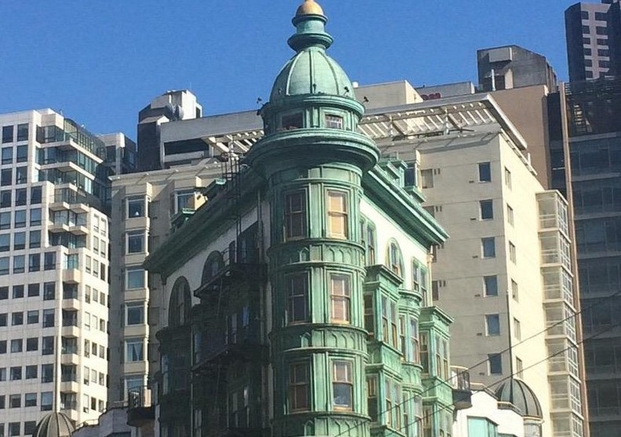

Why San Francisco?
A city of Hills
Besides being known for its iconic landmarks, San Francisco was built across more than 50 named hills, including Twin Peaks, its highest natural point at 925 feet.
The Painted Ladies are a famous row of colourful Victorian houses overlooking Alamo Square Park in San Francisco. Built in the late nineteenth century, they became famous for their beautiful architecture, pastel colours and appearances in films, television shows and photographs, making them one of the city's most recognisable landmarks.
Lombard Street is one of San Francisco's most famous streets, known for its steep, winding section featuring eight sharp hairpin turns. Surrounded by beautiful flowers and gardens, it was designed to make the steep hill safer for cars. Located on Russian Hill, it attracts visitors from around the world.